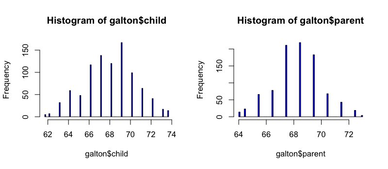
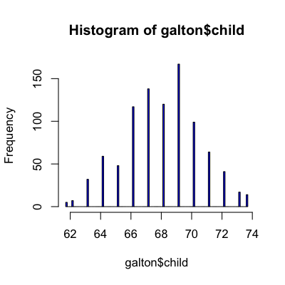
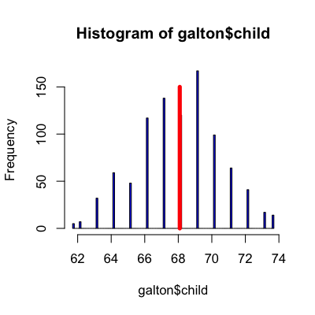
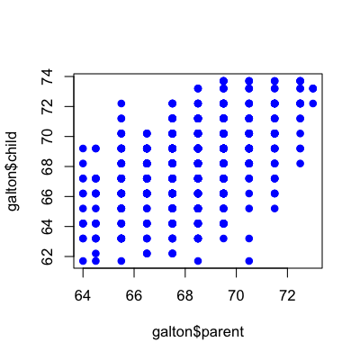
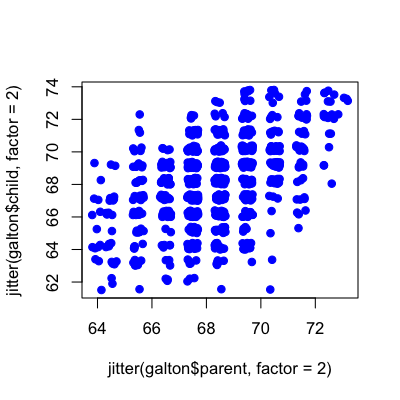
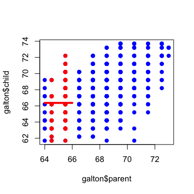
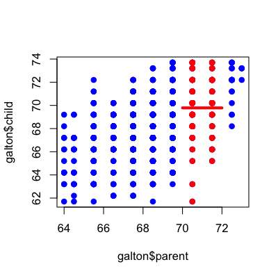
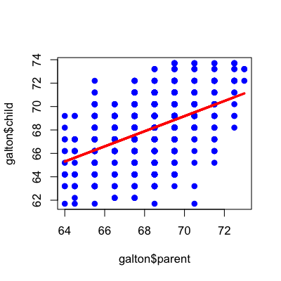
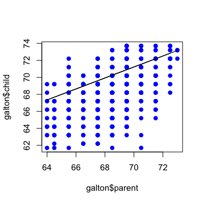
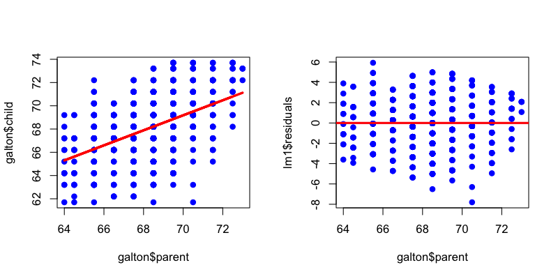

- Describe the distribution of variables
- Describe the relationship between variables
- Make inferences about distributions or relationships
Basic least squares
Jeffrey Leek, Assistant Professor of Biostatistics
Johns Hopkins Bloomberg School of Public Health
Goals of statistical modeling
Example: Average parent and child heights

http://www.nature.com/ejhg/journal/v17/n8/full/ejhg20095a.html
Still relevant

http://www.nature.com/ejhg/journal/v17/n8/full/ejhg20095a.html
Predicting height: the Victorian approach beats modern genomics
Load Galton Data
You may need to run install.packages("UsingR") if the UsingR library is not installed
library(UsingR); data(galton)
par(mfrow=c(1,2))
hist(galton$child,col="blue",breaks=100)
hist(galton$parent,col="blue",breaks=100)

The distribution of child heights
hist(galton$child,col="blue",breaks=100)

Only know the child - average height
hist(galton$child,col="blue",breaks=100)
meanChild <- mean(galton$child)
lines(rep(meanChild,100),seq(0,150,length=100),col="red",lwd=5)

Only know the child - why average?
If \(C_i\) is the height of child \(i\) then the average is the value of \(\mu\) that minimizes:
\[ \sum_{i=1}^{928}(C_i - \mu)^2 \]
What if we plot child versus average parent
plot(galton$parent,galton$child,pch=19,col="blue")

Jittered plot
set.seed(1234)
plot(jitter(galton$parent,factor=2),jitter(galton$child,factor=2),pch=19,col="blue")

Average parent = 65 inches tall
plot(galton$parent,galton$child,pch=19,col="blue")
near65 <- galton[abs(galton$parent - 65)<1, ]
points(near65$parent,near65$child,pch=19,col="red")
lines(seq(64,66,length=100),rep(mean(near65$child),100),col="red",lwd=4)

Average parent = 71 inches tall
plot(galton$parent,galton$child,pch=19,col="blue")
near71 <- galton[abs(galton$parent - 71)<1, ]
points(near71$parent,near71$child,pch=19,col="red")
lines(seq(70,72,length=100),rep(mean(near71$child),100),col="red",lwd=4)

Fitting a line
plot(galton$parent,galton$child,pch=19,col="blue")
lm1 <- lm(galton$child ~ galton$parent)
lines(galton$parent,lm1$fitted,col="red",lwd=3)

Why not this line?
plot(galton$parent,galton$child,pch=19,col="blue")
lines(galton$parent, 26 + 0.646*galton$parent)

The equation for a line
If \(C_i\) is the height of child \(i\) and \(P_i\) is the height of the average parent, then we can imagine writing the equation for a line
\[C_i = b_0 + b_1 P_i\]
Not all points are on the line
plot(galton$parent,galton$child,pch=19,col="blue")
lines(galton$parent,lm1$fitted,col="red",lwd=3)

Allowing for variation
If \(C_i\) is the height of child \(i\) and \(P_i\) is the height of the average parent, then we can imagine writing the equation for a line
\[C_i = b_0 + b_1 P_i + e_i\]
\(e_i\) is everything we didn't measure (how much they eat, where they live, do they stretch in the morning...)
How do we pick best?
If \(C_i\) is the height of child \(i\) and \(P_i\) is the height of the average parent, pick the line that makes the child values \(C_i\) and our guesses
\[ \sum_{i=1}^{928}(C_i - \{b_0 + b_1 P_i\})^2 \]
Plot what is leftover
par(mfrow=c(1,2))
plot(galton$parent,galton$child,pch=19,col="blue")
lines(galton$parent,lm1$fitted,col="red",lwd=3)
plot(galton$parent,lm1$residuals,col="blue",pch=19)
abline(c(0,0),col="red",lwd=3)
